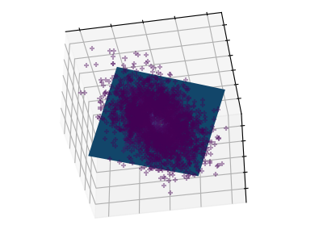
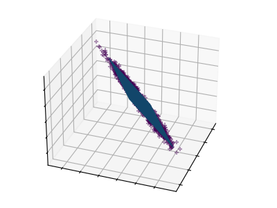

Note
Click here to download the full example code or to run this example in your browser via Binder
Principal components analysis (PCA)¶
These figures aid in illustrating how a point cloud can be very flat in one direction–which is where PCA comes in to choose a direction that is not flat.
# Authors: Gael Varoquaux
# Jaques Grobler
# Kevin Hughes
# License: BSD 3 clause
Create the data¶
import numpy as np
from scipy import stats
e = np.exp(1)
np.random.seed(4)
def pdf(x):
return 0.5 * (stats.norm(scale=0.25 / e).pdf(x) + stats.norm(scale=4 / e).pdf(x))
y = np.random.normal(scale=0.5, size=(30000))
x = np.random.normal(scale=0.5, size=(30000))
z = np.random.normal(scale=0.1, size=len(x))
density = pdf(x) * pdf(y)
pdf_z = pdf(5 * z)
density *= pdf_z
a = x + y
b = 2 * y
c = a - b + z
norm = np.sqrt(a.var() + b.var())
a /= norm
b /= norm
Plot the figures¶
from sklearn.decomposition import PCA
import matplotlib.pyplot as plt
# unused but required import for doing 3d projections with matplotlib < 3.2
import mpl_toolkits.mplot3d # noqa: F401
def plot_figs(fig_num, elev, azim):
fig = plt.figure(fig_num, figsize=(4, 3))
plt.clf()
ax = fig.add_subplot(111, projection="3d", elev=elev, azim=azim)
ax.set_position([0, 0, 0.95, 1])
ax.scatter(a[::10], b[::10], c[::10], c=density[::10], marker="+", alpha=0.4)
Y = np.c_[a, b, c]
# Using SciPy's SVD, this would be:
# _, pca_score, Vt = scipy.linalg.svd(Y, full_matrices=False)
pca = PCA(n_components=3)
pca.fit(Y)
V = pca.components_.T
x_pca_axis, y_pca_axis, z_pca_axis = 3 * V
x_pca_plane = np.r_[x_pca_axis[:2], -x_pca_axis[1::-1]]
y_pca_plane = np.r_[y_pca_axis[:2], -y_pca_axis[1::-1]]
z_pca_plane = np.r_[z_pca_axis[:2], -z_pca_axis[1::-1]]
x_pca_plane.shape = (2, 2)
y_pca_plane.shape = (2, 2)
z_pca_plane.shape = (2, 2)
ax.plot_surface(x_pca_plane, y_pca_plane, z_pca_plane)
ax.xaxis.set_ticklabels([])
ax.yaxis.set_ticklabels([])
ax.zaxis.set_ticklabels([])
elev = -40
azim = -80
plot_figs(1, elev, azim)
elev = 30
azim = 20
plot_figs(2, elev, azim)
plt.show()
- 
- 
Total running time of the script: ( 0 minutes 0.158 seconds)